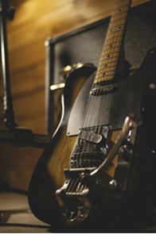
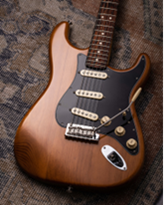
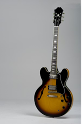
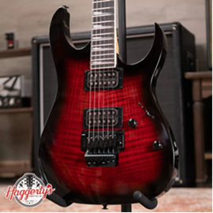

Electric Guitars

Electric guitars work differently from acoustic guitars. Instead of relying on a hollow body to amplify sound, electric guitars use pickups that convert string vibrations into electrical signals.
These signals are sent to an amplifier, which produces the sound you hear. Electric guitars are most commonly used in rock, metal, blues, and jazz music.
Because of their technology and sound customization, electric guitars are a key part of modern music. Their solid bodies also allow for different playing techniques and higher volume levels than acoustic guitars.
Fender Stratocaster

The Fender Stratocaster is one of the most famous electric guitars ever made.
It features three single-coil pickups and a tremolo bridge for a wide variety of sounds.
Gibson Les Paul

The Gibson Les Paul is known for its thick, powerful tone and solid construction.
It is widely used in rock and blues due to its strong sustain and rich sound.
Ibanez RG

The Ibanez RG is built for speed and precision, popular in rock and metal.
Its thin neck and powerful pickups make it ideal for fast solos and technical playing.